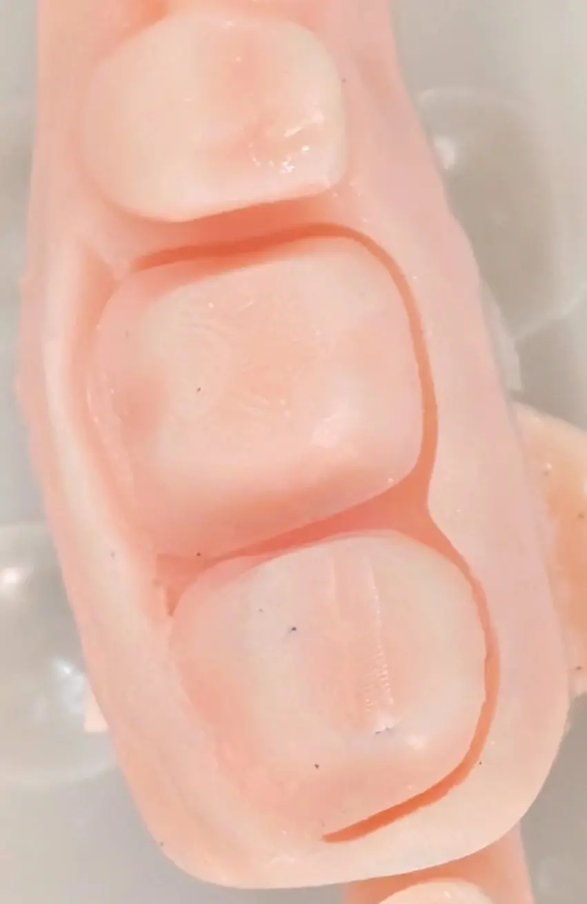

نسخه استخراجشده؛ ترجمه یا تأیید علمی انجام نشده است. وضعیت: captured
لحظهی تحویل روکش است. فیت مارجین و اکلوژن قابل قبولاند، اما کانتکت پروگزیمال با دندان مجاور باز یا ضعیف مانده است. به نظر میرسد تنها راه، ارسال مجدد کار به لابراتوار است. واقعاً همین است؟
ارسال مجدد به لابراتوار تنها گزینهی پیش رو نیست. در کیسهای منتخب میتوانی بهجای آن، فرم دندان طبیعی مجاور را با کامپوزیت اصلاح کنی؛ یک رویکرد جایگزین و کاربردی در مطب.
به همین دلیل، ارزیابی سفتی کانتکت با نخ دندان در معاینات دورهای بیمار اهمیت بالایی دارد.
در ترمیم با روکش در ناحیهی دندان هفت، حفظ کانتکت مناسب اهمیت ویژهای دارد. با توجه به نیروهای واردشده و اکلوژن، گاهی احتمال باز شدن کانتکت بین روکش هفت و دندان ۶ وجود دارد. حالا گاهی روکش ۶ و ۷ همزمان ساخته شدهاند.

هدف این رویکرد، بهینهسازی و تسهیل درمان بیمار و کنترل مؤثرتر مشکلات آتی است.